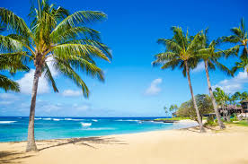

Graphics
1. What kind of photos are good to encode using JPEG?
- JPEG is the best for photos with the smooth color transitions and complex details. it works well also for the photographs, landscapes, portraits, digital artwork, and web images where file size needs to be reduced without an noticeable loss in quality.
2. What kind of photos are good to encode using GIF?
- GIF is best for images with limited colors, simple graphics, and animations. It works well for logo, icons, line art, and pixel art. GIF is also great for short animated clips due to its ability to loopframes.
3. What is unique about the PNG format?
- PNG means Portable Network Graphics format is unique because it supports lossless compression, meaning it reatains full image quality without losing details.
4. How do you resize your photo to the size it should be displayed?
- To resize the photo, you can use the image editing software like photoshop, GIMP, or an online tool to manually adjust the width and the height.
5. Why should you resize photos using photo editing software instead of resizing it using CSS?
- Resizing the photos using photo editing software is better than using CSS becuase it reduces the actual file size, making the image load faster and improving website performances.